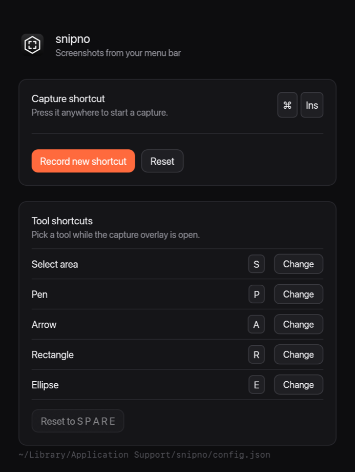

Smart selection
Hover and snipno highlights the window, panel, card or text box under your cursor. Click to capture it, scroll to grow the selection, or drag your own area.
snipno is a tiny screenshot tool that lives in your Mac's menu bar. Press a hotkey, mark things up on the frozen screen, then click a window or drag an area. It's on your clipboard.
Free. No account, no uploads, no tracking. Your screenshots never leave your Mac.
snipno covers what you'd expect from Windows' Snipping Tool, redone for the Mac, and stays out of your way the rest of the time.
Hover and snipno highlights the window, panel, card or text box under your cursor. Click to capture it, scroll to grow the selection, or drag your own area.
Pen, arrow, box and circle, six colours and three line widths, all drawn on the frozen screen before you pick the area. Hold ⇧ for perfect squares and circles.
No save dialog and no editor window. The capture lands on your clipboard at full Retina resolution, with your drawings included, ready to paste.
The hotkey freezes all your screens together, so you capture on whichever one you're looking at. The others close as soon as you're done.
Any capture hotkey you like, including Insert and a Windows keyboard's PrtSc. Tool keys default to S P A R E and can all be changed.
One Rust binary of about 16 MB, built with egui and drawn on the GPU. It sits in the menu bar with no Dock icon and uses no CPU until you press the hotkey.
Everything in the overlay has a key. Change the capture hotkey and the tool keys from the menu bar icon → Settings.

snipno builds from source on macOS 12 or newer. You need a recent Rust toolchain; rustup sets that up.
$ git clone https://github.com/AVMG20/snipno $ cd snipno # once: a local signing certificate, so macOS # remembers the permission across rebuilds $ ./make-signing-cert.sh # build, copy to /Applications and start $ ./bundle.sh --install
First capture: macOS asks for Screen Recording permission. Allow it in System Settings → Privacy & Security, then quit and reopen snipno from its menu bar icon.
Start at login: add Snipno under System Settings → General → Login Items.
Uninstall: quit it from the menu bar and delete /Applications/Snipno.app.